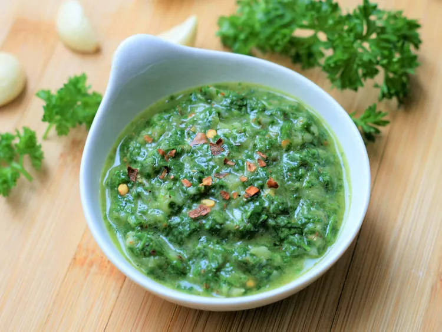

Easy Chimichurri

Description
I took elements of several chimichurri recipes I found to come up with
this combination, which has become a favorite. Can be stored for up to 2
weeks in the refrigerator.
Ingredients
- 1 cup tightly packed chopped parsley leaves
- 1 cup tightly packed chopped cilantro leaves
- ¼ cup red wine vinegar
- ½ onion, coarsely chopped
- 5 cloves garlic
- 1 teaspoon coarse salt
- 1 teaspoon dried oregano
- 1 teaspoon hot pepper flakes
- 1 teaspoon freshly ground black pepper
- ½ cup extra-virgin olive oil
Steps
-
Combine parsley, cilantro, red wine vinegar, onion, garlic, salt,
oregano, hot pepper flakes, and pepper in the bowl of a food processor;
pulse a few times. Pour olive oil in slowly, while pulsing a few more
times, until chimichurri is chopped, but not mushy.
- Refrigerate until flavors have blended, about 2 hours.
Return to main page